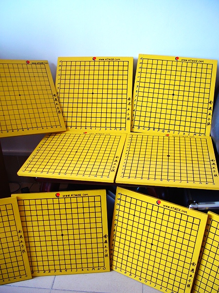

关于南通五子棋社棋具思考
#1 关于南通五子棋社棋具思考 作者：有志青年 发表时间：2006-2-9 14:00:22
2006-2-9决定：
为了以后的聚会能够正常开展，欲采购一批五子棋棋具
磁性折叠式中号五子棋：26.00元
图片

棋的规格为276*274*16mm(展开尺寸)
2006-2-15决定
网上联系了许久没有回音，现决定请木工师傅定制棋盘，已经和木匠师傅联系。
材料：指接板[木工板]
数量：8副
规格：每格间距2.5CM，方便大棋子，边框各空1CM，标注坐标和“南通五子棋社”字样
造价：150元[预计]
效果图：

棋子：购买玻璃围棋子替代[黑]181[白]180，分割成五子棋黑白各90子，也就是说原则上到180手没有分出胜负算平手，这样购买4副玻璃围棋就可以了。
还有其他没有考虑到的问题，请各位朋友提出！
2006-6-15 的结果，纯手工打造！


#2 Re:采购计划 作者：幽若 发表时间：2006-2-12 18:18:59
还是觉得好小哦#3 Re:采购计划 作者：春风 发表时间：2006-2-15 12:38:10
我来过了！
#4 Re:关于南通五子棋社棋具思考 作者：黄药师 发表时间：2006-2-15 21:53:54
有志太负责了！#5 Re:关于南通五子棋社棋具思考 作者：极地剑客 发表时间：2007-2-18 15:08:03
挺好的啊~后面那个木板的挺强悍的~偶用的才几毫米厚#6 Re:关于南通五子棋社棋具思考 作者：隐藏菜系 发表时间：2007-5-23 15:22:54
楼主~我想买那个大格（2.5）棋盘能在你这里买吗？
#7 Re:关于南通五子棋社棋具思考 作者：隐藏菜系 发表时间：2007-5-23 15:45:56
楼主~我想买那个大棋格（2.5CM）的棋盘 可以在你这里买吗？
#8 Re:关于南通五子棋社棋具思考 作者：许相公 发表时间：2007-5-24 9:17:10
能否给我做一个25路，或者小一些，23路的也行
#9 Re:关于南通五子棋社棋具思考 作者：黄药师 发表时间：2007-7-20 17:27:35
那个第一个磁性的五子棋折叠的我要啊！哪里有的卖？